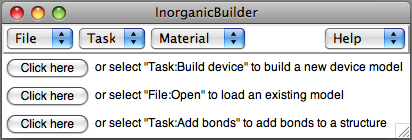
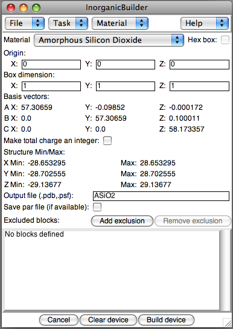
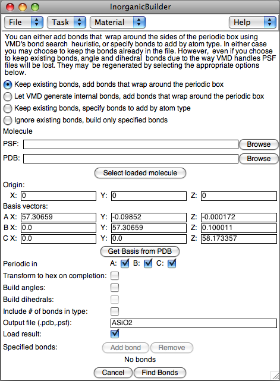
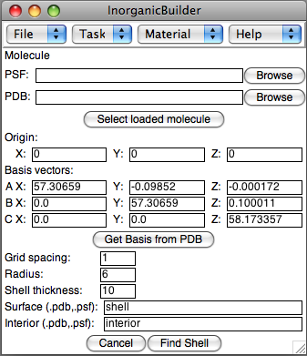
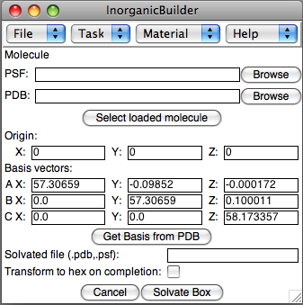
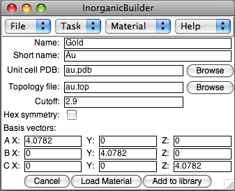

The InorganicBuilder plugin provides tools for many of the functions
needed to set up simulations of molecules and inorganic structures. The
functions of the plugin are organized into several Tasks. Initially, the plugin displays buttons for three common activities, which correspond to options in the Task and File menues.
Menus
The plugin contains four top-level menus, File, Task, Material, and Help.
File Menu
The File menu has 2 options, Open and Save as. Save as saves the state of the plugin, including specifications for the last-built device and any modifications to the Material library. The Open option restores a previously saved state file. Note that it does not load any previously-generated structures into VMD. Those must be loaded separately.
Task Menu
The Task menu provides tools for performing several common operations needed to build an atomic model of an inorganic device. These operations are explained below.
Build device

This task lets you set up the basic parameters, including material and
dimensions, for the initial device structure. The following values
describe the structure:
- Material: Select a material to specify the corresponding unit cell
and basis cell dimensions. Additional materials can be added to this
menu using the text interface.
- Hex box: For materials with hexagonal symmetry in the X-Y plane,
checking this box will convert the structure to a hexagonal form.
- Origin: Specify the coordinates of the center of the device box
- Box dimension: Three integers specify the number of unit cells in
the A, B, and C directions. When using hexagonal symmetry, Diameter
defines the diameter of the inscribed cylinder, and height defines the
number of unit cells in the Z dimension.
- Make total charge an integer: If the total charge of the system is not an integer, the charge of all the atoms is scaled slightly to make the total system charge an integer. Then the total charge is recomputed. Due to insufficient precision in the PDB file format, there may still be a very small charge correction necessary, so any remaining charge is added to the first atom in the PDB file.
- Output file: The file name to store the resulting PSF/PDB files
- Save par file: For some material types, the plugin includes a parameter file in the CHARMM format which may be appropriate for some simulations. When available, this file will be saved along with the PDB and PSF files.
Clicking Draw Box after specifiying the box parameters will
construct a wire frame outline of the device (including any exclusions)
in the VMD OpenGL window.
In addition, you may cut regions out of the unit cell before you
construct it, by Adding exclusions, regions to remove from the
structure before constructing the PSF/PDB files. Defined regions can be
removed before construction by selecting one and clicking Remove
exclusion.
To create a device of interest, after the block of material is specified, regions of various shapes are removed. Several different types of exclusions are available for constructing the device:
- Parallelopiped: Specify one corner of the parallelopiped, and the
three vectors defining the three edges intersecting at that corner.
- Cylinder: Specify the centers of the bottom and the top of the
cylinder, as well as the radius.
- Sphere: Specify the center and radius of the sphere.
- Cone: Specify the center of the base of the cone, the apex, and the
radius of the base.
- Tetrahedron: Specify one corner of the tetrahedron, and the three
vectors defining the three edges intersecting at that corner.
- VMD selection: Specify a VMD selection (using the syntax of the
atomselect command) to either include or exclude. Selections will be
applied in the order that they are added to the exclusion list. VMD
selection exclusions will not show up when the Draw Box button is used,
since they must be applied while the structure is being filled with
atoms.
After defining the device size and all desired exclusions, press the
Build structure button to construct the model. Clicking
Cancel closes the plugin window.
Add bonds

When reading in a structure with no bond information, VMD uses a
distance-based algorithm to guess the bonds. This algorithm works well
for many models, but does not take into account bonds that wrap around
the walls of a periodic cell, or bond lengths in some materials, especially amorphous materials. This task enhances the built-in VMD bond
search algorithm by letting you add bonds to a previously-generated structure. The first prompt allows you to select one of the four available methods for generating bonds:
- Keep all existing bonds already defined in VMD, add bonds that wrap around the periodic box
- Let VMD regenerate internal bonds, add bonds that wrap around the periodic box
- Keep existing bonds, specify bonds to add by atom type
- Ingnore existing bonds, and create a PDB/PSF file containing only specified bonds
For some materials, the VMD distance-based bond search does not generate
correct bonds. For instance, with amorphous silicon dioxide, VMD's
distance-based search yields many incorrect O-O and Si-Si bonds in
addition to the desired Si-O bonds. This task lets you specify which
types of atoms may be bonded, and the maximum length of each bond type.
The following parameters are available:
- Molecule: Select a structure, either by selecting a molecule already
loaded in VMD, or by selecting the PSF and PDB files for a stored
structure.
- Origin and Basis: If you just created this structure, the Origin and
Basis parameters will be carried over from the Build Crystal task,
otherwise, enter the Origin (center of the box) and the basis vectors
for the periodic box.
- Periodic in: Only generate bonds wrapping around the basis cell for the specified directions.
- Transform to hex: If the unit cell has hexagonal symmetry in the X-Y plane, transform to a hexagonal box.
- Build angles/dihedrals: After building the two-atom bonds, also
generate angle and dihedral bonds
- Include # of bonds: Rename the atom types so that the last digit of each atom's type includes the number of bonds as the last character. For instance, a silicon atom with 4 bonds would have the atom type "SI4"
- Output file: The name of the PSF/PDB files of the structure with
bonds
- Load result: After generating and storing the structure, load it in
to VMD
Specify what element types should be bonded by pressing the Add
bond button. Enter the two element names and the maximum radius for
the bond. The Remove button can be used to get rid of unwanted
bond types.
After defining these parameters, press the Find Bonds button
to construct the model. Clicking Cancel closes the plugin window.
Find surface atoms

This task allows a device to be separated into two sets of files, one
containing atoms within a certain distance of the surface, and the other
containing the interior atoms. The shell of surface atoms is defined by
its proximity to vacuum. A grid is placed over the volume of the
periodic cell, and each grid point is considered a vacuum grid point if
no atoms fall within a sphere (bubble) of radius r centered on that grid
point. Then, surface atom shell of the desired thickness t is determined
by selecting all atoms closer than r + t of a vacuum grid point. These
parameters are entered into the plugin as follows:
- Molecule: Select a structure, either by selecting a molecule already
loaded in VMD, or by selecting the PSF and PDB files for a stored
structure.
- Origin and Basis: If you just created this structure, the Origin and
Basis parameters will be carried over from the Build Crystal task,
otherwise, enter the Origin (center of the box) and the basis vectors
for the periodic box.
- Grid spacing: The approximate resolution of the grid for deteriming
the vacuum region. This is only an approximate parameter, since the
actual distance is adjusted in each direction so that there are an
integer number of grid points along each basis vector.
- Radius: A grid point is considered a vacuum if no atoms lie within
the sphere of the specified radius around the grid point. Alternatively,
atoms can be viewed as spheres of this radius, and a grid point is only
a vacuum if it lies outside all the atoms.
- Shell thickness: The resulting surface shell will contain atoms
within this distance of the surface.
- Surface: The PSF/PDB files for the surface shell
- Interior: The PSF/PDB files for the interior atoms
Click Find Shell to find the surface shell and interior
structures, or Cancel to close the plugin window. This procedure
may take a few minutes to complete.
Solvate box

The Solvate task uses VMD's Solvate plugin to solvate a system according to the specified basis vectors.
- Molecule: Select a structure, either by selecting a molecule already
loaded in VMD, or by selecting the PSF and PDB files for a stored
structure.
- Origin and Basis: If you just created this structure, the Origin and
Basis parameters will be carried over from the Build Crystal task,
otherwise, enter the Origin (center of the box) and the basis vectors
for the periodic box.
- Solvated file: The PSF/PDB files for the resulting solvated
structure
- Transform to hex: If the basis vectors permit it, the structure will be transformed into a version that is hexagonal in the X-Y plane.
Click Solvate Box to solvate the structure, or Cancel to
close the plugin window.
Material Menu

The plugin lets you define new materials to use for constructing devices. The materials can be defined as part of your InorganicBuilder session, and saved for reloading into another session. Materials currently in the library may also be viewed.
To add a new material, the plugin requires several pieces of information.
- Name and Short name: The Name is a longer, more descriptive name for the material. The Short Name is a shorthand name that should be a unique identifier for the material.
- Unit coll PDB: A PDB file containing names and coordinates of the atoms in the unit cell.
- Topology file: An optional file describing the unit-cell atom types in a CHARMM-compatible format.
- Cutoff: The cutoff radius for periodic bond searches performed by the plugin. This does not affect VMD's internal bond search routine, or the plugin's specify-bonds algorithm.
- Hex symmetry: Specifies whether the unit cell has the correct basis vectors to be represented as a hexagonal cell in the X-Y plane.
- Basis vectors: The basis vectors for the unit cell.
Click Add to library to add the material to your current InorganicBuilder session, or Cancel to close the plugin window. After adding a material to the library, you may view it with the View option in the Material menu. From there, you can choose to Save a copy of the material, which can be loaded into another InorganicBuilder session using the Load Material button